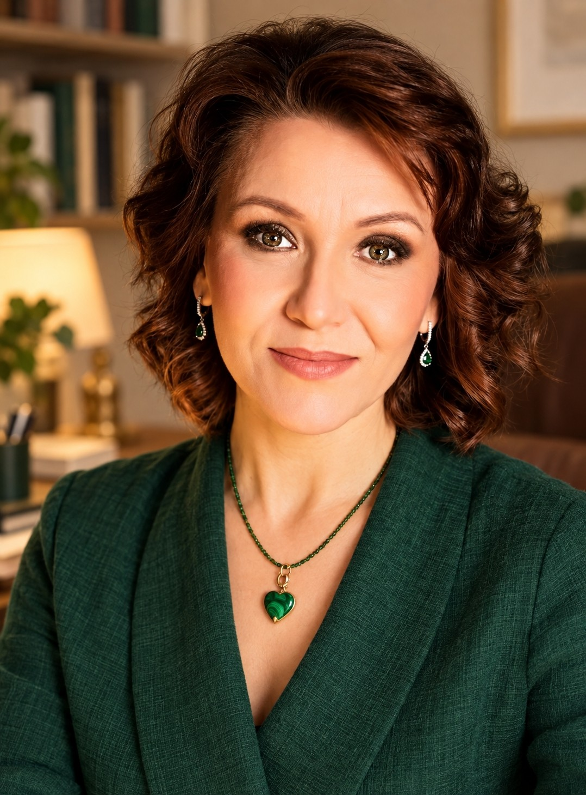

Юлия Леус
Психолог-практик с 1998 года
Автор образовательных программ, основатель онлайн-школы «Я — Развитие» и школы живого наследия «ЯРГА».

Психолог-практик с 1998 года
Автор образовательных программ, основатель онлайн-школы «Я — Развитие» и школы живого наследия «ЯРГА».